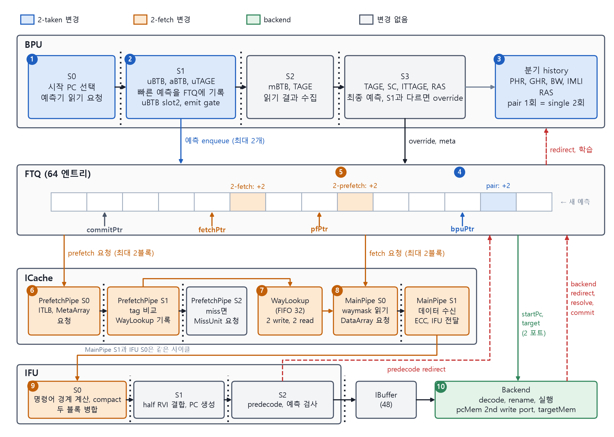
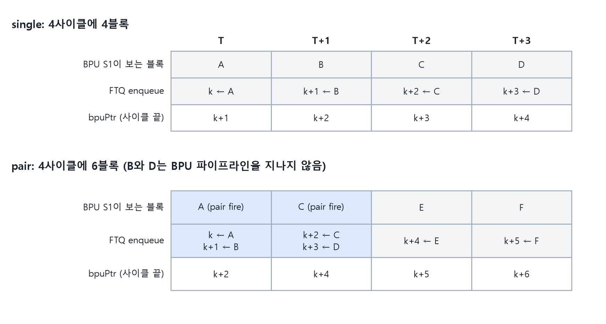

3장 · 무엇을 바꿨나
4장과 5장을 읽기 전에 변경 전체를 한 장으로 본다. 번호는 그림과 표에서 같다.
이 장에서 배우는 것
- 열 곳의 변경이 각각 2-taken, 2-fetch, 둘의 접점 중 어디에 속하는지 분류할 수 있다.
- 바뀌지 않은 것이 무엇인지 말할 수 있다.

그림 3-1. 2-taken과 2-fetch가 바꾼 부분. 번호는 아래 표와 대응한다.
| 번호 | 위치 | 변경 내용 | 장·절 |
|---|---|---|---|
| 1 | BPU S0 | pair fire 때 시작 PC가 BR2 target(블록 C)으로 바로 넘어간다 | 4.4 |
| 2 | BPU S1 | uBTB 엔트리에 slot2 추가. emit gate가 pair 발화 여부를 정한다 | 4.2~4.4 |
| 3 | 분기 history | pair 1회의 결과가 single 2회와 같아지도록 갱신한다 | 4.6 |
| 4 | FTQ enqueue | 한 사이클에 엔트리 2개를 쓰고 bpuPtr를 2 올린다 | 4.5 |
| 5 | FTQ 발행 | pfPtr와 fetchPtr가 한 번에 2씩 진행할 수 있다. 안전거리 guard 추가 | 5.2 |
| 6 | PrefetchPipe | 요청 하나에 블록 2개. MetaArray 2포트를 나눠 쓴다 | 5.3 |
| 7 | WayLookup | 한 사이클에 2개 쓰고 2개 읽는다 | 5.4 |
| 8 | MainPipe | req(0), req(1) 두 블록을 함께 처리한다 | 5.4 |
| 9 | IFU | 두 블록의 명령어를 하나의 열로 합친다 | 5.5 |
| 10 | Backend | pcMem에 두 번째 write port 추가. 예측 target 전용 targetMem 추가 | 6.3 |
바뀌지 않은 것. aBTB, uTAGE, mBTB, TAGE, SC, ITTAGE의 내부 구조. IBuffer와 backend 실행 경로. 특히 S2, S3 예측기에 두 번째 읽기 포트를 달지 않았다. 4장의 Limited 정책이 그 이유다.

그림 3-2. single 예측과 pair 예측의 FTQ 공급 비교. BPU 쪽에서만 본 2-taken의 효과다.
핵심 정리
- 변경은 1~4(2-taken), 5~9(2-fetch), 10(접점)으로 나뉜다.
- 예측기 내부와 backend 실행 경로는 그대로다. 바뀐 것은 블록을 세고 옮기는 쪽이다.